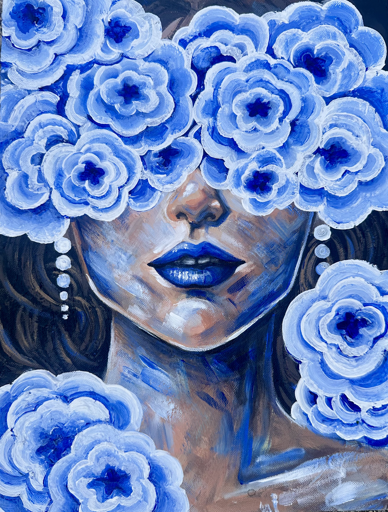
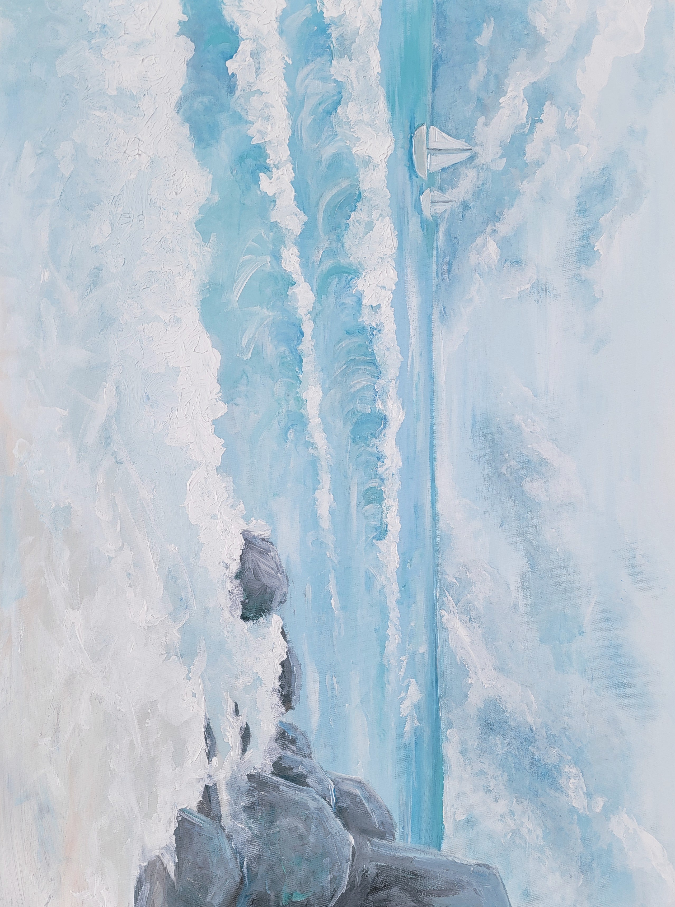

Madison Lumpkin
Art & Design Student at Louisiana State University
About Me
I am a student at Louisiana State University in Baton Rouge, currently pursuing a BA in Arts & Design and an MS in Digital Media Arts & Engineering. With a foundation in traditional painting and drawing, my practice has evolved into a deep interest in 3D art and digital creation. I am particularly drawn to the process of building experiences through 3D animation, modeling, rendering, programming, and texturing.
I absolutely love learning new processes, software, and artistic mediums. Outside of my work, I’m a tennis player and coach, a cook, a jewelry maker, and an avid reader, among many other interests.
Software


Coding Languages
Digital Illustration & Concept Art


Traditional Art






3D Modeling & Rendering


Animation
Game Development
Graphic Design